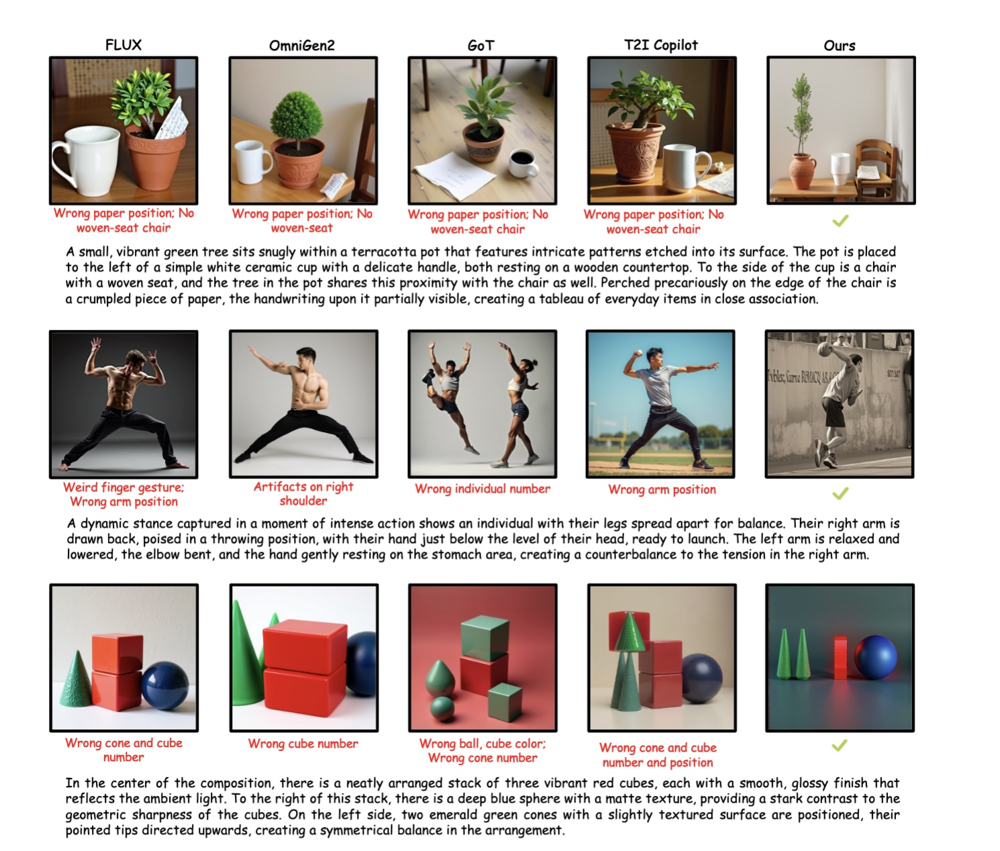

Divide-and-conquer planning
Instead of globally planning all objects at once, coDrawAgents groups objects by semantic priority and incrementally reasons about each round, reducing layout complexity.
CVPR 2026 Findings
Lingnan University · Carnegie Mellon University · The Chinese University of Hong Kong · Alibaba DAMO Academy · Shanghai Jiao Tong University · The University of Hong Kong · China University of Petroleum (East China)

Text-to-image generation has advanced rapidly, but existing models still struggle with faithfully composing multiple objects and preserving their attributes in complex scenes. coDrawAgents introduces an interactive multi-agent dialogue framework that adaptively switches between a direct text-to-image pathway and a layout-aware generation process. In the layout-aware mode, the framework decomposes the prompt into attribute-rich instances, incrementally plans layouts with visual grounding, explicitly checks for spatial and semantic errors, and synthesizes the image step by step.
Instead of globally planning all objects at once, coDrawAgents groups objects by semantic priority and incrementally reasons about each round, reducing layout complexity.
The Planner uses the evolving canvas and grounding information to place new objects in context, avoiding isolated text-only spatial reasoning.
The Checker validates size, scale, placement, and cross-object consistency, then refines layouts before rendering.
Decides whether to use a layout-free or layout-aware pathway, decomposes prompts into attribute-rich object descriptions, ranks semantic salience, and schedules generation rounds.
Applies a Visual Spatial Chain-of-Thought to analyze the canvas state, reason about context, and enforce physical plausibility when proposing layouts.
Performs check-then-refine validation at both object and global levels, correcting overlaps, scale drift, and relation inconsistencies across iterations.
Supports both layout-free text-to-image generation and layout-aware rendering, building the scene incrementally so later steps benefit from richer visual context.


coDrawAgents achieves the best overall results on both GenEval and DPG-Bench, improving text-image alignment, spatial accuracy, counting, and attribute binding in complex scenes.


The Interpreter routes easy prompts to direct generation and reserves multi-agent reasoning for complex scenes.
Planning, checking, and painting continually inform one another instead of operating as a fixed one-shot pipeline.
The evolving image acts as feedback, making future layout decisions more grounded and less error-prone.
@inproceedings{li2026codrawagents,
title = {coDrawAgents: A Multi-Agent Dialogue Framework for Compositional Image Generation},
author = {Li, Chunhan and Wu, Qifeng and Pan, Jia-Hui and Hui, Ka-Hei and Hu, Jingyu and Jiang, Yuming and Sheng, Bin and Liu, Xihui and Gong, Wenjuan and Liu, Zhengzhe},
booktitle = {Proceedings of the IEEE/CVF Conference on Computer Vision and Pattern Recognition},
year = {2026},
note = {Findings}
}